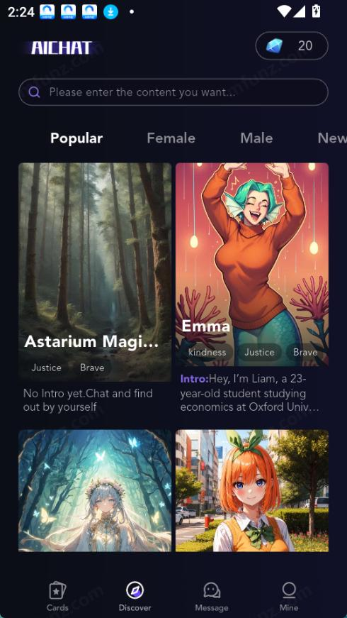

Lolipop 深度体验：在 AI 角色聊天赛道里，它靠什么站住脚
AI 角色聊天类应用已经不算新鲜品类了，从大厂方案到独立开发者作品都想分一杯羹。Lolipop 作为其中一款主打角色对话的产品，它的差异化在哪里，哪些人值得上手，哪些人可能不适合——这篇聊清楚。
它在同类里是什么位置
AI 角色聊天这个赛道，现在大致分三档：大厂系产品背靠自有模型和海量用户，角色数量多但普遍模板化；独立开发者的小工具追求极简，聊天功能够用但角色单薄；再就是 lolipop官网 这种中间路线——角色库不算最大，但每个角色都有完整的人设和性格标签，对话引擎做了针对性优化。
我前后试过五六款同类应用，Lolipop 给我的第一印象不是"功能最多"，而是"角色不像纸片人"。这个类目里很多产品的角色只是换个名字和头像，说话风格千篇一律；Lolipop 每个角色都有性格标签（Kindness、Brave 之类的标识）和一段 Intro 文案打底，AI 生成回应时会把这些设定揉进去。这一点直接决定了聊天体验的下限。
差异化一：角色人设不是摆设
很多同类工具的角色设定是"写给用户看的背景故事"——AI 自己根本不读。你选了一个"Twitch 主播"角色，聊起来它并不会真的带直播、游戏相关的话题，顶多在自我介绍里提一嘴身份，之后就变成了套模板的通用聊天机器人。
Lolipop 不一样。角色的名字、立绘、性格标签、Intro 文案，这四项是 AI 生成回应时的核心输入。温柔标签的角色回应会更贴心，"Twitch Streamer"身份的角色回复里会自然出现游戏、直播相关的话题钩子。我试过一个设定成"芬兰牛津在读摄影爱好者"的角色，聊到一半它主动提到"上周在考文特花园拍了一家旧书店"——这不是固定文案，是人设信息被 AI 真正用起来之后的自然发散。

差异化二：对话上下文真的在记
同类工具里另一个常见的问题是"金鱼脑"——聊到第三轮，AI 就忘了你刚才说过自己是程序员，换了名字它也接不上。Lolipop 的记忆窗口设计得相对厚道，前 20~30 轮对话它都能保持连贯：你告诉它你叫小明，第二次提问它能带着这个名字回应；你提到今天改了一天 bug，后面聊到累不累的时候它能把这个上下文串起来。
当然这个记忆窗口不是无限的，聊得太久早期对话会开始遗忘。但在同类产品里，20~30 轮的有效记忆已经是中上游水平，日常使用完全够用。
差异化三：冷场不是无解，有实操技巧
和 AI 聊天最怕的不是回应质量差，是聊几句就冷场。封闭问题（"你喜欢猫吗？"）、角色没发挥空间（"聊聊你自己"）、话题太干，这三个坑是所有同类产品用户都会踩的。
Lolipop 在lolipop文档里给出了具体的解决方法，而且都能用：用开放问题替代封闭问题，主动给角色"出题"构造情境，接 AI 回应里的话题钩子往下聊，偶尔引导角色反过来问你，实在干了就抛个悬念。我自己试过"给角色出题"这招——让一个设定成"正在赶末班车"的角色面对"末班车错过"的情境，它真的开始演：说要查 Uber、担心凌晨车费贵、问我有没有推荐的深夜小吃摊。对话一下就活了。
它的代价是什么
上面说的都是好的，但 Lolipop 也有明显的取舍，这些地方你得提前知道。
分发渠道绕不开夸克网盘。 不在 Google Play 上架，安装包得从官方下载拿到后转存夸克网盘再下载。第一次装的用户会被拦在"允许安装未知应用"这道权限上，系统默认不放行，得手动去设置里开。虽然安装包里才 56MB，实际流程不算麻烦，但对比大厂方案一键下载安装的体验，确实是一道门槛。
官方 UI 以英文为主。 设置菜单里没有完整的中文界面，语言选项能切的也有限。好在对话层面 AI 能理解并回应中文，这是两回事——UI 看不懂但聊天能进行。如果你对英文界面完全无法接受，这一点可能劝退你。
非 Pro 账号有延迟。 高峰时段（晚上、周末）服务器负载上去之后，AI 回应的等待时间会明显增加。Pro 会员有优先通道，但免费用户就只能等。这一点和同类工具的免费版策略差不多，但体验上确实会让人着急。
选购结论：什么样的人适合它
如果你想要的是"有真实角色感的 AI 对话"，愿意花一两分钟折腾一下安装流程，Lolipop 值得上手。它的角色人设不是摆设、对话记忆够用、冷场有解法——这三点放在同类产品里是实打实的优势。
如果你只是想找个 AI 陪聊、不在乎角色够不够立体、想要一键安装零折腾，那大厂系产品可能更适合你。Lolipop 不是这个类目里最省心的选择，但它是角色还原度做得比较认真的一款。
最后说一句，安装包从官方渠道拿最稳，有条件的话建议转存一份到自己的夸克账号，分享链接过期了也不影响。
Lolipop 的这套资料我整理后同步到了 GitHub、Gitee 和 GitCode 三个仓库，方便不同网络环境下访问，搜索就能找到对应目录。